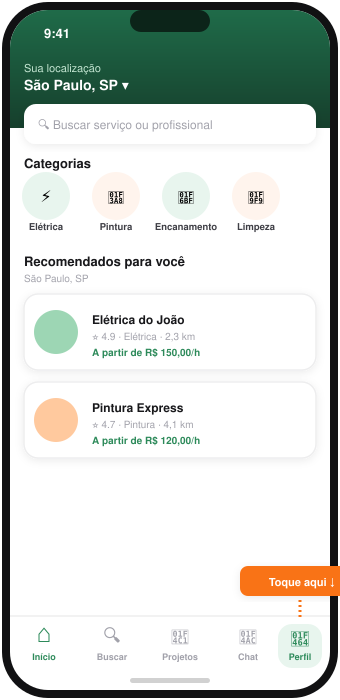
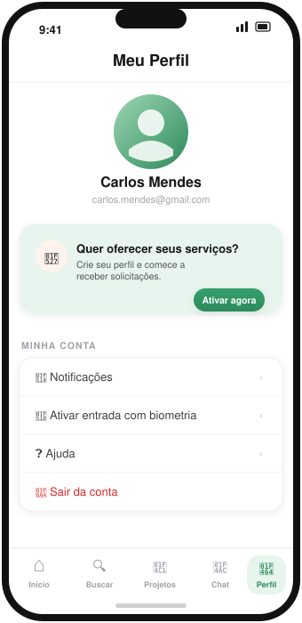
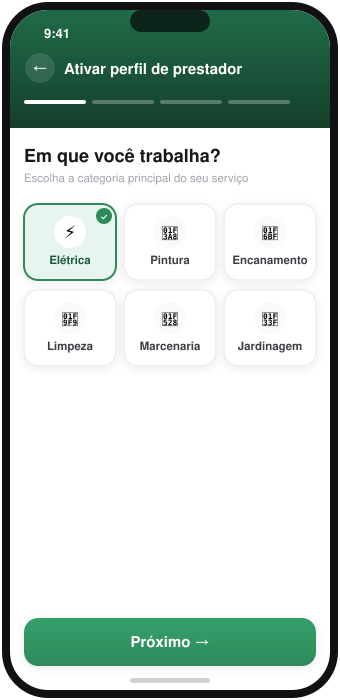
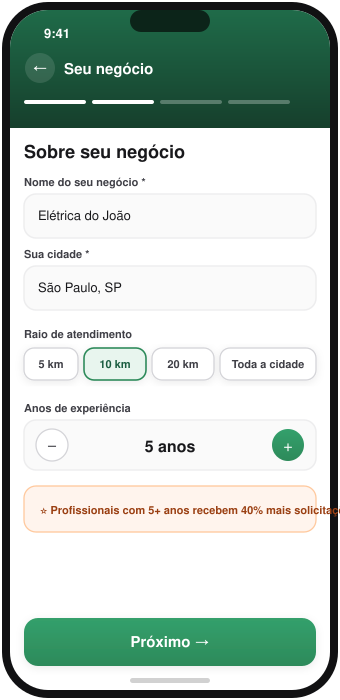
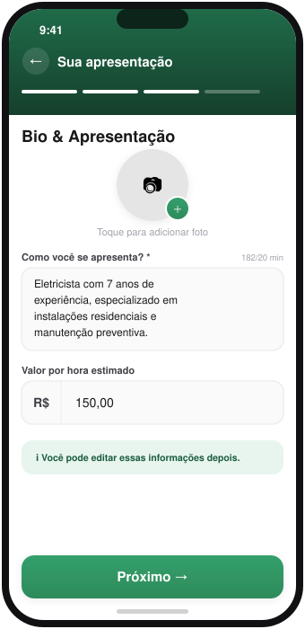
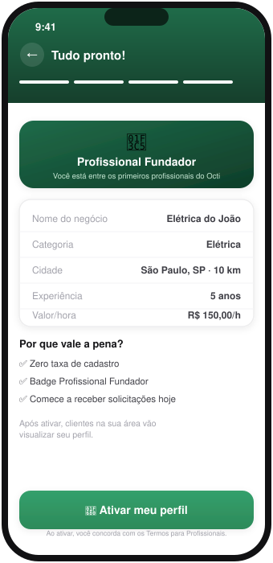
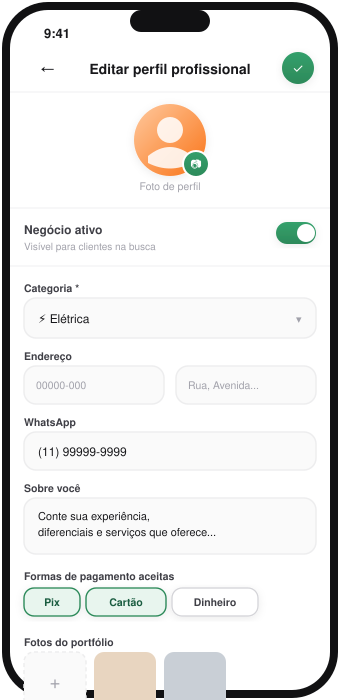

O caminho completo, tela por tela, para ativar seu perfil de prestador e começar a receber solicitações.
Depois de instalar o app e criar sua conta, siga este roteiro para ativar seu perfil profissional. Leva menos de 5 minutos e é o que faz seu negócio aparecer nas buscas de clientes na sua região.
Assim que você abre o app, cai direto na tela inicial (Home), com a busca e as categorias. Na barra inferior, o último ícone à direita é Perfil — toque nele para continuar.

Dentro do Perfil, role até o cartão "Quer oferecer seus serviços?" — toque em Ativar agora para iniciar a ativação profissional (4 etapas rápidas).

Selecione a categoria principal do seu serviço (ex: elétrica, pintura, limpeza). É a primeira das 4 etapas de ativação — uma barra de progresso no topo mostra onde você está.

Informe:
Dica que o próprio app mostra: profissionais com 5+ anos de experiência recebem 40% mais solicitações — vale preencher com atenção.

Adicione uma foto de perfil (toque no círculo com ícone de câmera) e escreva uma bio com no mínimo 20 caracteres contando sua experiência e diferenciais. O valor por hora é opcional aqui — pode ser ajustado depois.

Revise o resumo (nome, categoria, cidade, experiência, valor/hora) e toque em "🚀 Ativar meu perfil". Pronto — você ganha o selo de Profissional Fundador e seu negócio já fica visível para clientes na sua área.

Depois de ativado, volte em Perfil → Meu Perfil Profissional → Editar para preencher o que faz a diferença na hora de fechar negócio:
Nessa mesma tela fica o botão "Negócio ativo" — é o que torna você visível ou invisível nas buscas, mesmo depois de ativado (útil se quiser pausar temporariamente).

Se você já é cliente e prestador ao mesmo tempo, no Perfil aparece um botão "Mudar para Prestador" / "Mudar para Consumidor" — use para alternar entre os dois modos do app sem precisar de duas contas.
Ficou com dúvida em algum passo? Fale com a gente pelo WhatsApp ou veja a página de cadastro de prestador.